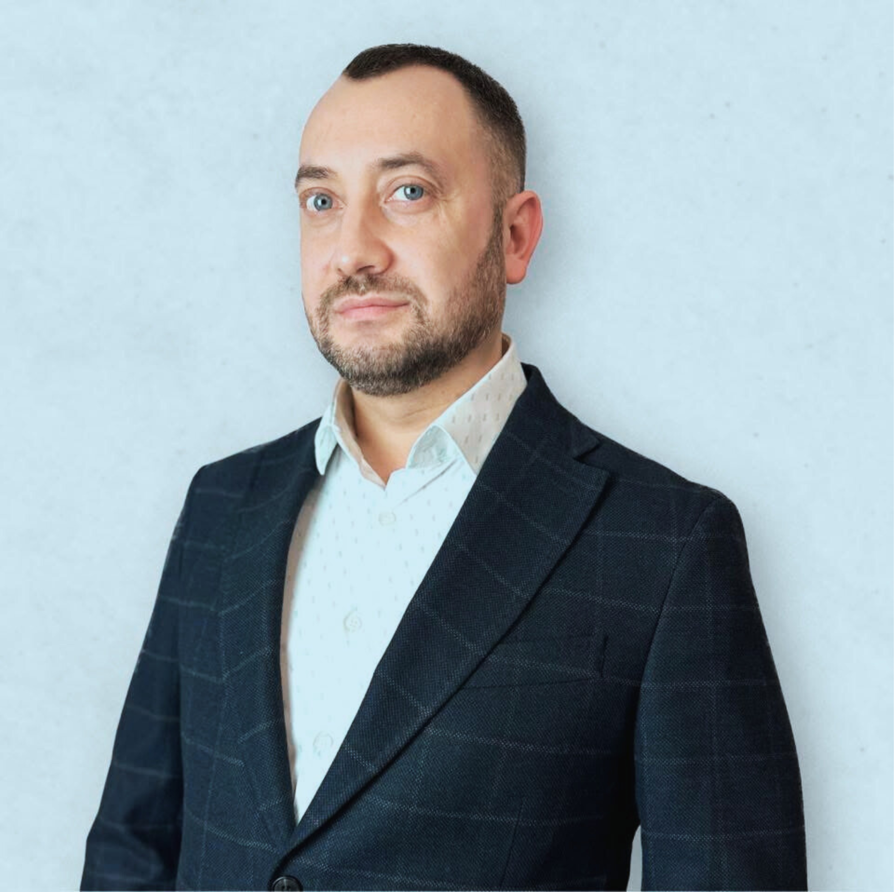

Denys Sliusarchyk
Building IT Systems & Digital Solutions
About Me
General Information
I am an IT leader with over 15 years of experience in system integration, IT project management, and business development. Throughout my career, I have successfully launched and scaled companies in Ukraine, Kazakhstan, and Poland, delivering more than 100 IT projects, including over 60 international ones.
My expertise includes IT project management, system integration, team leadership, and technology implementation. I collaborate with global providers of software solutions, cloud technologies, server hardware, data storage systems (SAN, NAS), networking solutions (LAN, WAN, Wi-Fi, SD-WAN), and critical engineering infrastructure (UPS, power supply, cooling systems).
Current Focus
Currently, I am actively mastering Full-Stack development, enhancing my skills in frontend technologies (JavaScript ES6+, React), backend development (Node.js, Python, MongoDB), API integration, automation, and DevOps practices. Additionally, I am deepening my knowledge in artificial intelligence (AI), machine learning (ML), and cloud platforms (AWS, Azure) to implement them in future projects.
I utilize tools like Figma, Miro, and Adobe XD, applying Design Thinking methodology for effective collaboration with designers, product teams, and stakeholders. My goal is to create scalable IT solutions that deliver real business value.
Current Goal
- Leverage my extensive experience in IT leadership and system integration to grow in Full-Stack development
- Engage in projects combining software development with system integration
- Focus on scalable solutions integrating AI, ML, and cloud technologies
Hobbies & Interests
- Emerging technologies (AI, ML, Web3, cloud solutions, automation)
- Travel & entrepreneurship – exploring global IT markets and business ecosystems
- Book writing – published my first book, currently working on future projects
- Family – quality family time and maintaining work-life balance
- Sports & healthy lifestyle – combining self-development with health and well-being